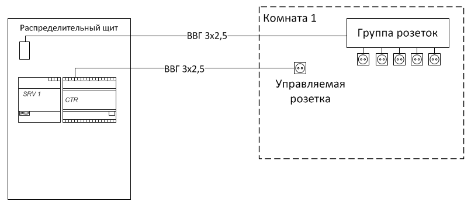
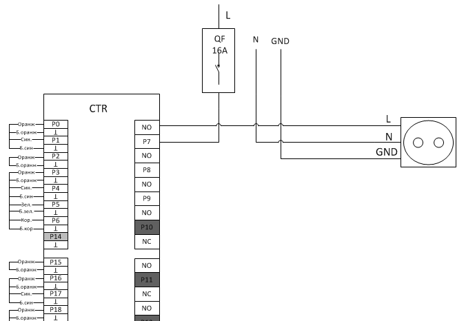
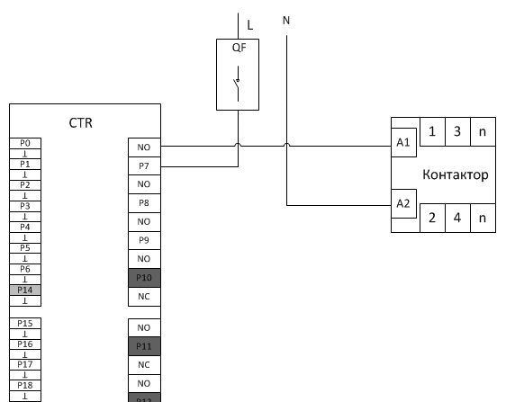

Подключение нагрузок
Подключение стандартных розеток
Схема подключения групп розеток и отдельных управляемых розеток:
 
Подключение силовых групп
Для управления силовыми группами или большими нагрузками (более 16А) необходимо использовать контакторы.
Схема подключения силовых групп через контактор:
